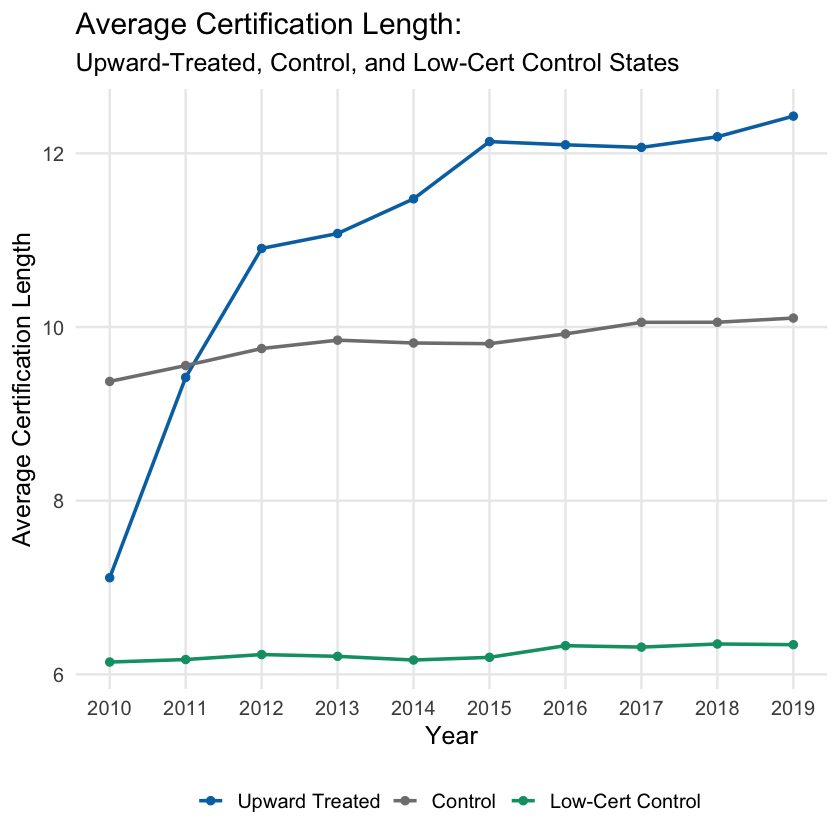
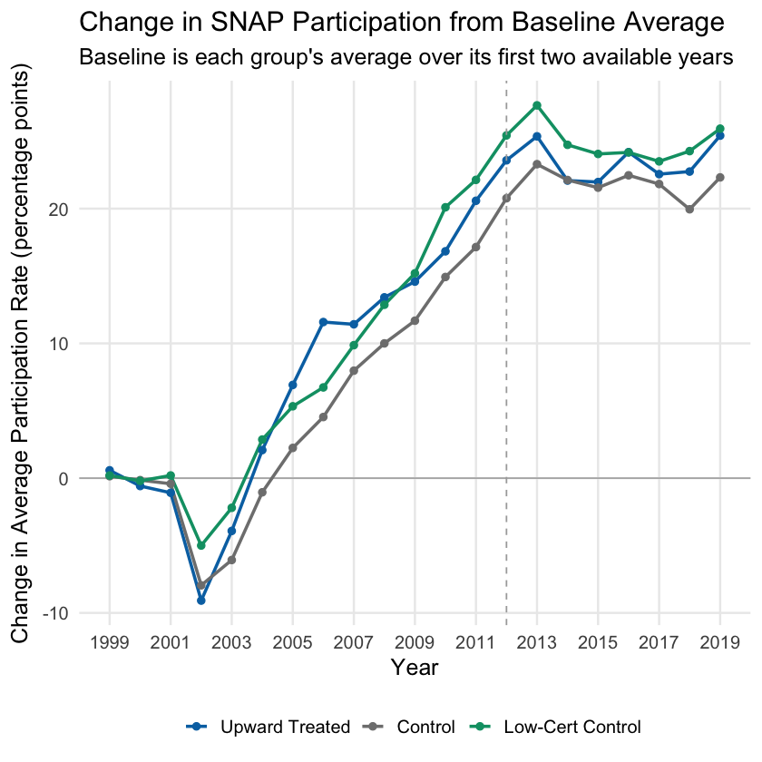
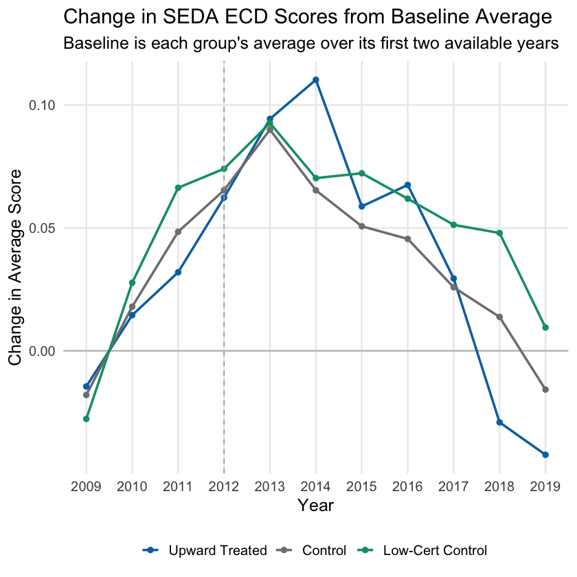

Project Overview
This thesis asks whether state choices about SNAP certification length are associated with changes in educational inequality. The central realization is that SNAP supports children partly by stabilizing the material conditions of the household, and administrative burden can interrupt that stability. When families must repeatedly navigate paperwork, deadlines, and procedural risk to maintain benefits, the households with the fewest resources may be most exposed to benefit interruptions, budget strain, food insecurity, and stress that shape the home conditions that support learning.
I use variation in certification length policy because it determines how often households must re-prove eligibility to keep benefits. The project combines USDA SNAP policy data, USDA participation-rate estimates, and Stanford Education Data Archive outcomes in a state-year panel, then uses a difference-in-differences design with state and year fixed effects.
-0.045
Estimated drop in the economic disadvantage achievement gap after states lengthened SNAP certification periods.
-0.038
Similar gap reduction when treated states are compared with low-certification states.
419
State-year comparisons used to connect policy changes with education outcomes.
Literature Review Highlights
The literature review builds a pathway from administrative burden to educational inequality: SNAP administration affects benefit stability, benefit stability affects household stability, and household stability helps shape the learning conditions available to economically disadvantaged students.
SNAP Stabilizes the Household
SNAP reduces poverty depth and material hardship, especially for households with children, by expanding food-purchasing resources and freeing scarce income for other needs (Tiehen, Jolliffe, & Gundersen, 2012; Dasgupta & Plum, 2023).
Burden Creates Stability Inequity
Learning, compliance, and psychological costs do not fall evenly. They make it harder for some eligible households to maintain benefits, creating unequal exposure to instability even within the population the program is meant to serve (Herd & Moynihan, 2025; Murphy, 2023).
Recertification Interrupts Stability
Shorter certification periods expose households more often to paperwork, interviews, deadlines, and the possibility of losing benefits for procedural reasons, making program access less stable over time (Gray, 2018; Giannella et al., 2024).
Household Stability Reaches School
Prior research links SNAP timing and household resource stability to student performance, suggesting that unequal benefit stability can become unequal learning conditions for children (Gassman-Pines & Bellows, 2015, 2018; Heinrich et al., 2022).
Policy Variation
Treatment is defined as a meaningful upward increase in average certification length relative to a state’s baseline. The plots below show how the policy change appears across treated states and where treatment timing falls across the study period.
Certification Length by Treatment Group

First Treated Year

Model Specification
The core difference-in-differences model uses state and year fixed effects with state-clustered standard errors. This setup compares changes within treated states after certification length increases to changes in control states over the same years.
In this specification, Gapst is the state-year economic disadvantage achievement gap. The coefficient β1 estimates how much the gap changed in treated states after certification length increased, relative to the change in control states over the same period. A negative coefficient means the economic disadvantage gap narrowed after the policy change; a positive coefficient would mean the gap widened. State fixed effects account for persistent differences across states, year fixed effects account for common national shifts, and state-clustered standard errors account for repeated observations within the same state over time.
Main Finding
Longer certification periods are associated with reductions in the economic disadvantage achievement gap. The preferred model estimates a 0.045 standard deviation reduction after upward certification-length treatment. A narrower comparison using low-certification control states produces a similar 0.038 standard deviation reduction.
| Model | Estimate | Std. Error | p-value | Observations | Adjusted R2 |
|---|---|---|---|---|---|
| Main DiD | -0.045 | (0.018) | 0.017** | 419 | 0.84 |
| Low-certification controls | -0.038 | (0.017) | 0.040** | 182 | 0.89 |
* p < 0.10, ** p < 0.05, *** p < 0.01.
Achievement Gap: All Controls

Achievement Gap: Low-Certification Controls

Participation and SEDA ECD Mechanism Check
The participation-rate models are directionally consistent with the administrative-burden mechanism, but less conclusive than the achievement-gap results. Certification length is positively associated with participation in the fixed-effects model, while the treatment DiD estimate is positive but not statistically significant.
The SEDA ECD achievement-score analysis examines whether achievement among economically disadvantaged students moved in the expected direction after states increased average SNAP certification length. The regression estimate is positive, which is directionally consistent with the theory that reduced administrative burden could improve educational outcomes. However, the result is not statistically significant, so this finding is best interpreted as suggestive rather than conclusive.
| Participation Model | Estimate | Std. Error | p-value | Observations | Adjusted R2 |
|---|---|---|---|---|---|
| Certification length | 0.729 | (0.371) | 0.055* | 510 | 0.770 |
| Post upward treatment | 2.195 | (2.838) | 0.443 | 510 | 0.765 |
* p < 0.10, ** p < 0.05, *** p < 0.01.
SNAP Participation Pre-Trends

SEDA ECD Achievement Score Pre-Trends

Interpretation
I study SNAP participation and SEDA ECD achievement scores as mechanism tests for the main achievement gap finding. The participation analysis tests whether longer certification periods are associated with stronger program access, while the ECD score analysis tests whether outcomes for economically disadvantaged students move in the expected direction. These results are suggestive but less conclusive than the main gap finding. Longer certification length predicted higher SNAP participation in the fixed-effects model, but the participation DiD was not statistically significant. The ECD achievement score estimate was also positive but not statistically significant. Taken together, these results are directionally consistent with the theory that reduced administrative burden may improve household stability, but the strongest evidence appears in the achievement gap models, where upward certification-length treatment was significantly associated with a narrower economic disadvantage gap.